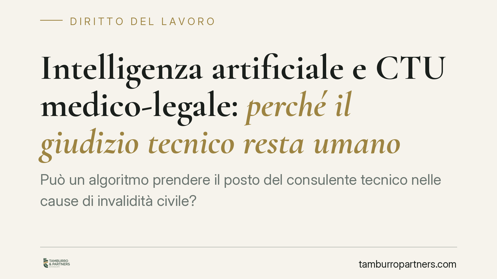

Intelligenza artificiale e CTU medico-legale: perché il giudizio tecnico resta umano
Può un algoritmo prendere il posto del consulente tecnico nelle cause di invalidità civile? Una recente pronuncia di merito risponde di no: l'elaborazione affidata a un sistema di intelligenza artificiale non surroga la consulenza medico-legale. La decisione tocca il cuore del contenzioso previdenziale e offre indicazioni concrete a chi difende l'assistito in giudizio.

Il caso
Nel contenzioso previdenziale e del lavoro il nodo dell'intelligenza artificiale non è più teorico. In un giudizio in materia di invalidità civile è emersa la questione se l'accertamento sanitario affidato al consulente tecnico d'ufficio possa essere sostituito, o seriamente messo in discussione, da un'elaborazione algoritmica prodotta da un sistema di IA.
Una pronuncia di merito della sezione lavoro ha escluso questa possibilità. Precisiamo un dato di trasparenza: al momento gli estremi identificativi completi della decisione (numero, data, giudice) non risultano pubblicati in forma ufficiale. Il valore del pronunciamento sta quindi nel principio affermato, non in un precedente formalmente consolidato. Lo trattiamo come spunto di commento su un orientamento, non come fonte vincolante.
Inquadramento normativo
Occorre distinguere due piani che spesso vengono confusi.
Il primo è processuale. Nei giudizi in materia di prestazioni assistenziali e previdenziali opera l'accertamento tecnico preventivo obbligatorio previsto dall'art. 445-bis c.p.c. (ATPO). Si tratta di una fase a sé, con un consulente nominato dal giudice per accertare le condizioni sanitarie prima e al di fuori dell'ordinario contraddittorio sul merito. Altra cosa è la CTU disposta in corso di causa, ad esempio quando si contesta l'esito dell'ATPO o quando la verifica sanitaria rientra nel giudizio ordinario. La questione dell'IA si pone in entrambi i contesti, ma la cornice processuale non coincide: l'ATPO ha regole proprie di deposito, contestazione e omologazione.
Il secondo piano riguarda la disciplina dell'intelligenza artificiale introdotta dalla L. 132/2025. La normativa affronta il principio della cosiddetta riserva di umanità, cioè l'esigenza che le decisioni che incidono sui diritti restino riferibili a una persona e non siano delegate a un sistema automatico. Un'avvertenza di metodo: su un tema così nuovo il riferimento puntuale al singolo articolo va verificato parola per parola sul testo ufficiale, perché la riserva di umanità è concepita in primo luogo per la decisione giudiziaria e non per l'attività del consulente tecnico. Preferiamo quindi richiamare il principio nella sua portata generale, senza inchiodarci a un numero di articolo non confermato.
A monte restano le garanzie costituzionali: il diritto di difesa (art. 24 Cost.) e il giusto processo (art. 111 Cost.). È in questa cornice che si colloca il quadro delle agevolazioni e tutele per la persona con disabilità (artt. 3 e 33 L. 104/1992), cui il giudizio di invalidità dà accesso.
Il principio affermato
Il punto centrale è netto. La consulenza medico-legale è una valutazione tecnica terza, affidata a un professionista nominato dal giudice e soggetta al contraddittorio delle parti. Non è un semplice confronto di documenti. Di conseguenza non può essere sostituita da un output algoritmico, né il suo risultato può essere smontato dalla sola produzione di certificati medici di segno diverso.
La divergenza tra la CTU e certificazioni prodotte dalla parte, da sola, non basta a screditare l'accertamento peritale. Chi vuole contestarlo deve indicare errori metodologici, lacune o vizi logici specifici, non limitarsi a opporre una lettura alternativa.
Implicazioni pratiche
Per chi agisce o resiste in giudizio cambia il modo di impostare la strategia difensiva.
L'IA può essere strumento di ausilio: aiuta a organizzare la documentazione sanitaria, a individuare incongruenze, a preparare le osservazioni al consulente. Non può diventare prova sostitutiva dell'accertamento tecnico. Chi confida in un report generato da un sistema automatico per ribaltare una CTU rischia di presentarsi in giudizio con uno strumento privo di valore probatorio autonomo.
Resta centrale il contraddittorio tecnico, cioè il dialogo tra consulenti di parte e consulente d'ufficio. È lì che si gioca la contestazione efficace, non nella produzione di elaborazioni algoritmiche.
Cosa fare in concreto
- Individua la fase processuale esatta: distingui l'ATPO ex art. 445-bis c.p.c. dalla CTU in corso di causa, perché cambiano termini e modalità di contestazione.
- Nomina un consulente tecnico di parte qualificato e deposita osservazioni tempestive e circostanziate sulle risultanze peritali.
- Contesta la CTU sul metodo: segnala errori, lacune o vizi logici, non limitarti a opporre certificati discordanti.
- Usa gli strumenti di IA come supporto organizzativo e di analisi, mai come fonte probatoria autonoma.
- Conserva e ordina tutta la documentazione sanitaria in ordine cronologico, così da sostenere il confronto tecnico in sede di consulenza.
Disclaimer
Contributo informativo a cura di Tamburro & Partners - Avv. Giuseppe Tamburro. Non costituisce parere legale.
Ogni storia di lavoro ha i suoi tempi.
Se gestisci HR e vuoi un confronto su contenzioso, ispezioni o licenziamenti, scrivi allo studio. Ti rispondiamo entro un giorno lavorativo.